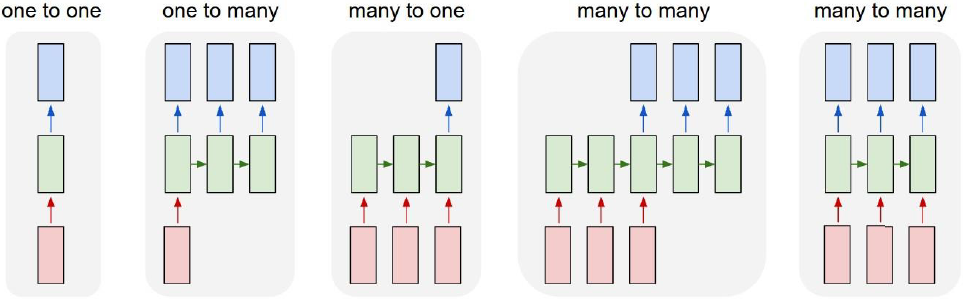

1 Recurrent Neural Networks Introduction
Traditional feed-forward network assume that all inputs and outputs are independent of each other.
Counter example language/speech modeling
- Predicting the next word in a sentence depends on the entire sequence of words before the current word
- Example: “The man who wore a wig on his head went inside”
- Who went inside? Man or wig?
Use the same weights/layers for every time step (hence, recurrent ), and pass on the output to the next time step
A recurrent neural network and the unfolding in time of the computation involved in its forward computation
We can notice that
\begin{align*} s_{t}&=\operatorname{tanh}(U x_{t}+W s_{t-1})\\ \hat{y}_{t}&=\mathrm{softmax}(Vs_{t})\\ E_{t}(y_{t},\hat{y_{t}})&=-y_{t}\log\hat{y_{t}} \\ E(y,{\hat{y}})&=\sum_{t}E_{t}(y_{t},{\hat{y}}_{t})\\ &=-\sum_{t}y_{t}\log\;{\hat{y}}_{t} \end{align*}
Kinds of RNNs

2 Backprop Through Time (BPTT)
Unrolled RNN
Goal
- Calculate error gradients w.r.t U, V and W
- Learn weights using SGD
Just like we sum up errors, we also sum up gradients at each time step for one training example {\frac{\partial E}{\partial W}}=\sum_{t}{\frac{\partial E_{t}}{\partial W}} \begin{align*} \frac{\partial E_{3}}{\partial V}&=\frac{\partial E_{3}}{\partial\hat{y}_{3}}\frac{\partial\hat{y}_{3}}{\partial V}\\ &=\frac{\partial E_{3}}{\partial\hat{y}_{3}}\frac{\partial\hat{y}_{3}}{\partial z_{3}}\frac{\partial z_{3}}{\partial V}\\ &=(\hat y_{3}-y_{3})\otimes s_{3} \end{align*}
- Here
- \otimes is outer product
- \frac{\partial E_{3}}{\partial\hat{y}_{3}} = \hat y_{3}-y_{3} (if we use mean square type of error)
- \frac{\partial\hat{y}_{3}}{\partial z_{3}} is ignored, assuming we are not using the activation function
- \frac{\partial z_{3}}{\partial V}=s_{3}
- Here
Consider the below pic
{\frac{\partial E_{3}}{\partial W}}={\frac{\partial E_{3}}{\partial{\hat{y}}_{3}}}{\frac{\partial{\hat{y}}_{3}}{\partial s_{3}}}\left[{\frac{\partial s_{3}}{\partial W}}+{\frac{\partial s_{3}}{\partial s_2}}{\frac{\partial s_{2}}{\partial W}}+{\frac{\partial s_{3}}{\partial s_2}}{\frac{\partial s_{2}}{\partial s_1}}{\frac{\partial s_{1}}{\partial W}}\right]
It can be generalized as:
{\cfrac{\partial E_{3}}{\partial W}}=\sum_{k=0}^{3}{\cfrac{\partial E_{3}}{\partial{\hat{y}}_{3}}}{\cfrac{\partial{\hat{y}}_{3}}{\partial s_{3}}}{\cfrac{\partial s_{3}}{\partial s_{k}}}{\cfrac{\partial s_{k}}{\partial W}}
\cfrac{\partial E_{3}}{\partial U} can be calculate in same way \cfrac{\partial E_{3}}{\partial W}
s_{3}=\operatorname{tanh}(U x_{t}+W s_{2})
Similar to backprop , we can define: \delta_{2}^{(3)}\,=\,\frac{\partial E_{3}}{\partial z_{2}}\,=\frac{\partial E_{3}}{\partial s_{3}}\frac{\partial s_{3}}{\partial s_{2}}\frac{\partial s_{2}}{\partial z_{2}} here we assume z_{2}=U x_{2}+W s_{1} and s_2 is obtained by applying some activation function on z_2
\frac{\partial E}{\partial W}=\sum_{i=0}^T \frac{\partial E_i }{\partial W}\propto\sum_{i=0}^T \left(\prod_{i=k+1}^y \frac{\partial s_i }{\partial s_{i-1} }\right)\frac{\partial s_k }{\partial W}
- Problems
- Vanishing gradient \left\|{\frac{\partial s_{i}}{\partial s_{i-1}}}\right\|_{2}<1
- Exploding gradient \left\|{\frac{\partial s_{i}}{\partial s_{i-1}}}\right\|_{2}>1
- Problems
vanishing gradient problem:
{\frac{\partial E_{3}}{\partial W}}=\sum_{k=0}^{3}{\frac{\partial E_{3}}{\partial{\hat{y}}_{3}}}{\frac{\partial{\hat{y}}_{3}}{\partial s_{3}}}\left(\prod_{j=k+1}^{3}{\frac{\partial s_{j}}{\partial s_{j-1}}}\right){\frac{\partial s_{k}}{\partial W}}
- For sigmoid activation function gradient is upper bounded by 1.
- it means that gradient will vanish overtime if there is a long range dependency
- it can be solved using truncated gradient descent but this is inefficient. And this issue is solved by LSTM up to some extent
exploding gradient problem
- if the weights are high the gradient will explode.
- but this problem can easily be solved by clipping the gradient.
3 Long Short Term Memory (LSTM)
- Input gate: scales input to cell (write)
- Output gate: Scales output from cell (read)
- Forget gate: Scales old cell value (reset)
\begin{array}{l} i=\sigma (x_t U^i +s_{t-1} W^i )\\ f=\sigma (x_t U^f +s_{t-1} W^f )\\ o=\sigma (x_t U^o +s_{t-1} W^o )\\ g=\tanh (x_t U^g +s_{t-1} W^g )\\ c_t =c_{t-1} \circ f+g\circ i\\ s_t =\tanh \left(c_t \right)\circ o \end{array}
- here bias is ignored.
- for all the gating function sigmoid activation function is used, and for others tanh is used. sigmoid is used for gating, because for gate we need values between 0 and 1.
- If we pick the input gate to always one and the forget gate to always zero, then we get the function of
almostRNN. almostbecause tanh is added.
- now if we have a closer look at c_t =c_{t-1} \circ f+g\circ i, we can see that the cell’s state doesn’t only depend on the gated input but it also depends on the previous cell state. it means there is a skip connection between previous state to current state. it helps the gradient flow for long run
4 LSTM variant
peepholes LSTM
LSTM with peephole connections \begin{array}{l}{{f_{t}=\sigma\left(W_{f}\cdot[C_{t-1},h_{t-1},x_{t}]\right)}}\\ {{{i}_{t}=\sigma\left(W_{i}\cdot[C_{t-1},h_{t-1},x_{t}]\ +\ b_{i}\right)}}\\ {{o_{t}=\sigma\left(W_{o}\cdot[C_{t},h_{t-1},x_{t}]\ +\ b_{\sigma}\right)}}\end{array}
Coupled forget and input gates C_{t}=f_{t}\star C_{t-1}+(1-f_{t})\ast{\bar{C}}_{t}
5 GRUs
\begin{align*} z&=\sigma(x_{t}U^{z}+s_{t-1}W^{z})\\ r&=\sigma(x_{t}U^{r}+s_{t-1}W^{r})\\ h&=\tanh(x_{t}U^{h}+\left(s_{t-1}\circ r)W^{h}\right)\\ s_{t}&=(1-z)\circ h+z\circ s_{t-1} \end{align*}
- Reset gate: defines how much of the previous memory to keep around.
- Update gate: determines how to combine the new input with the previous memory.
- A GRU has two gates, an LSTM has three gates.
- In GRUs
- No internal memory (c_t) different from the exposed hidden state.
- No output gate as in LSTMs.
- The input and forget gates of LSTMs are coupled by an update gate in GRUs, and the reset gate (GRUs) is applied directly to the previous hidden state.
- if the reset gate is set to all 1 and update gate is set to all 0, then it behaves like RNN
6 Example Applications
Language Modeling and Generating Text
- Given a sequence of words we want to predict the probability of each word given the previous words
- Can also be looked at as a generative model = fun!
- Typical input is a sequence of words; output = sequence of predicted words
- During training, o_t=x_{t-1}
Machine Translation
- Sequence of words in source language \Rightarrow Sequence of words in target language
Speech Recognition
- Given an input sequence of acoustic signals from a sound wave, predict a sequence of phonetic segments together with their probabilities.
Combining CNNs and RNNs: Image Captioning
- the Image can be passed to a pre-trained network and the output of that network can be passed to RNN.
7 Attention and Transformers
History:
Visual attention computation model
- Attention modeled as a way to focus on parts of images
- Notion of top-down and bottom-up attention
- bottom up attention: Suppose we are going somewhere, and something attractive passes in front of us, we pay attention to that, so here we pay attention to any content which is attractive we are not selective here.
- top down attention: Now suppose we are searching for something very passionately, now we will not be attracted if other things comes in front of us, we will pay attention only if we see what we are looking for.
Spatial Transformer Networks
- here author introduced a kind of localization network and grid generator, which creates the attention mechanism and adds this to the original net of path.
Attention in Image Captioning
- Generate captions from an input image using the attention mechanism.
- VGGnet as encoder for extracting features from input image
- LSTM decoder generates captions by producing one word at each time step, by using the context vector, previous hidden state and previously generated words.
- Here the network predicts attention and the distribution over vocab, the attention is then multiplied with the features as shown in the epoch figure.
- z_2 can get either a_1 attended feature or a_1 and a_2 attended feature. ( shown in the above figure )
- Context Vector : The context vector z_t is computed by a function \phi using the attention vectors a_i and the positive weights \alpha_i, i = 1, 2, \dots,L correspond to different locations of the input image. \begin{align*} e_{t i}&=\,f_{a t t}(\mathrm{a}_{i},\mathrm{h}_{t-1})\\ \alpha_{t i}&={\frac{e x p(e_{t i})}{\sum_{k=1}^{L}e x p(e_{t k})}}\\ \hat{z}_{t}&=\phi(\{\mathbf{a}_{i}\},\{\alpha_{i}\}) \end{align*}
- At each location i, the weight \alpha_i for the annotation vector a_i is calculated by an attention mechanism f_{att}.
- \alpha_i can be interpreted in two ways based on the two versions of this attention mechanism, namely the stochastic Hard and the deterministic Soft
- Hard attention:
- In hard attention, to generate the word y_i, the weight \alpha_i is seen as the probability that location i is the correct place to focus on.
- s_t is defined as the location variable that determines where the attention should be focused while producing the t^{th} word.
- They assign a multinoulli distribution with weights \alpha_i as the parameters and view \hat z_t as a random variable. p(s_{t i}=1|s_{j<t},\mathbf{a})=\alpha_{t,i} \hat{\mathbf{z}}_{t}=\sum_{t}s_{t,i}\mathbf{a}_{i}
- We can’t simply train the model with back propagation while using hard attention as we probabilistically sample from one of the attention vectors a_i and use that as the context vector \hat z_t.
- Soft Attention:
- In hard attention, to generate the word y_i, the weight \alpha_i is seen as as the relative importance given to location i in combining the attention vectors a^′_i s.
- Instead of sampling the location vector s_t every time as in the hard attention, an expectation of the context vector \hat z_t is taken and a deterministic attention model is formulated as: \mathbb{E}_{p(s_{t}|a)}[{\hat{\mathbf{E}}}_{t}]=\sum_{i=1}^{L}\alpha_{t,i}\mathbf{a}_{i} \phi(\{\mathbf{a}_{i}\},\{\alpha_{i}\})=\sum_{i}^{L}\alpha_{i}\mathbf{a}_{i}
- As this model is differentiable under the deterministic attention, it can be trained end-to-end using back propagation.
- Hard vs Soft Attention
DRAW: Deep Recurrent Attentive Writer
- here they used variational autoencoder, it is a generative model.
- they shown that image can be generated in recurrent way.
- attention was implemented using read and write module as shown in the figure.
- the method was learning the grid, where to focus on the image
- The grid has central coordinate as (g_x,g_y) and \delta is the gap between the grid locations,
- At each grid location they implement a gaussian with the variance \sigma
- Now the network can learn which area of the image to focus at, it can learn (g_x,g_y) adjust the \delta and can manage to focus on small part or large part the image, and \sigma tells how much of the local neighbor to take into account. (\tilde{g}_{X},\tilde{g}_{Y},\log\sigma^{2},\log\tilde{\delta},\log\gamma)=\,W(h^{d e c})
self-attention
- Largely inspired by the need in machine translation
- Encoder-decoder DNN models (RNNs, LSTMs, GRUs) were used for neural machine translation then
- Encoder takes input sentence and creates a summary (last hidden layer also called Context Vector ).
- Decoder translates input sentence sequentially by processing the summary.
- Problems with this approach:
- Translation quality depends on quality of summary.
- RNNs/LSTMs create bad summaries for longer sentences (long-range dependency problem).
- We can’t give more importance to a set of words compared to others in the input sentence
Origin of Self-Attention and Transformers
- Introduced by Bahdanau et al to improve the encoder-decoder based neural machine translation in NLP
- They use a BiRNN as encoder and generate annotation h_j by concatenating forward and backward hidden states.
- Each annotation h_j contains information about the whole input sequence with more emphasis around the j^{th} word.
- To focus on all input word embeddings while creating a context vector, they use a weighted sum of the hidden states rather than the final hidden state.
- For output word y_i, context vector c_i is the weighted sum of annotations h_j c_{i}=\sum_{j=1}^{T_{x}}\alpha_{i j}h_{j}
- The weight \alpha_{ij} for a given annotation h_j is: \alpha_{i j}=\frac{\exp(e_{i j})}{\sum_{k=1}^{T_{x}}\exp(e_{i k})} where e_{i j}=a(s_{i-1},h_{j}) is an alignment model that finds how well the j^{th} input matches with the i^{th} output.
8 Motivation for Transformers
- Sequential computation prevents parallelization
- Despite GRUs and LSTMs, RNNs still need attention mechanism to deal with long-range dependencies – path length for co-dependent computation between states grows with sequence length.
- But if attention gives us access to any state, maybe we don’t need the RNN?!
\tiny {\textcolor{#808080}{\boxed{\text{Reference: Dr. Vineeth, IIT Hyderabad }}}}